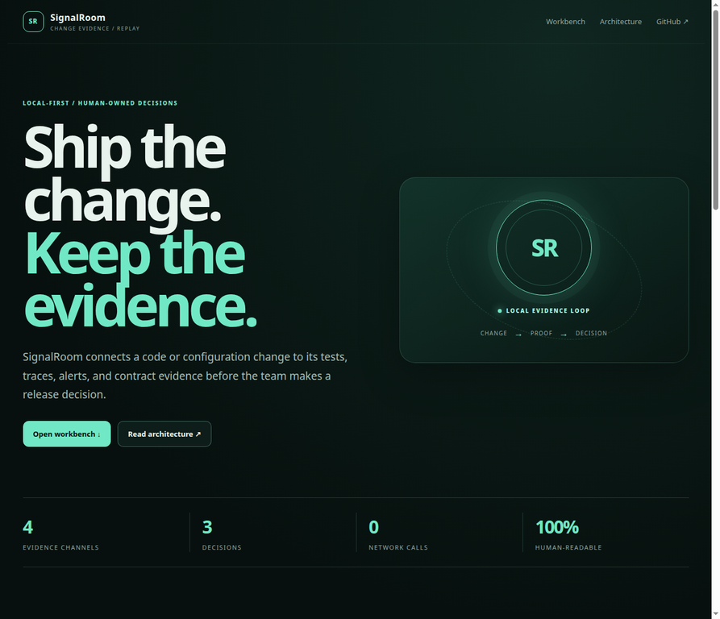
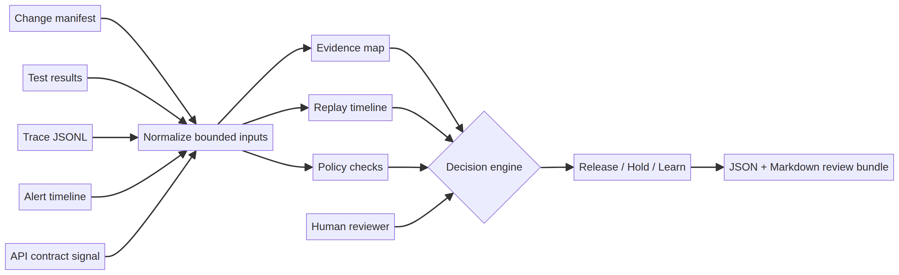

Durable job
Before merge, before release, and after an incident, turn evidence into a reusable decision object.
SignalRoom connects a code or configuration change to tests, traces, alerts, and contract evidence before a team makes a release decision.

AI can produce a plausible code change quickly, but the surrounding engineering system still has to prove that the change is compatible, tested, observable, and safe to review. SignalRoom is designed for developers, platform engineers, SREs, and AI engineers who need a shared evidence chain instead of an opaque green score.
Before merge, before release, and after an incident, turn evidence into a reusable decision object.
An absent signal is reported as absent evidence, never as proof that production is safe.
| Contract | Role | Boundary |
|---|---|---|
| Change manifest | Service, commit, author, files, risk | Does not inspect a repository automatically. |
| Evidence bundle | Tests, traces, alerts, API contract signal | Bounded JSON; no live telemetry ingestion. |
| Decision report | Decision, score, findings, action | Human review remains authoritative. |
The repository publishes JSON Schema files for each contract so a future CI adapter can validate inputs without copying the browser implementation.
No blocking signal was detected in the supplied bundle. This is not a production guarantee.
A blocking test, contract, policy, or alert signal requires human review before release.
The change is not blocked, but warnings or prior incident evidence should become a regression or follow-up item.

| Scenario | Observed result | What it demonstrates |
|---|---|---|
| Release ready | Release · 100/100 · 0 blockers | Complete test, trace, and compatible-contract evidence. |
| Release held | Hold · 4 blockers | Critical test failure, blocked tool, critical alert, breaking contract. |
| Incident learn | Learn · 90/100 · 1 warning | A prior warning becomes a regression or follow-up item. |
Boundary: These are local fixtures, not customer outcomes, live incidents, or production reliability metrics.
Add signed evidence bundles, redaction, identity and permissions, CI annotations, OpenTelemetry adapters, durable trace storage, versioned policies, and auditable overrides while preserving explicit decision semantics.